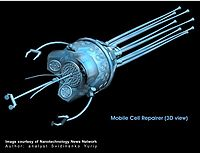

Nanoingeniería
 De: La Frikipedia, la enciclopedia extremadamente seria.
De: La Frikipedia, la enciclopedia extremadamente seria.
«Esto nunca sera necesario por que yo lo digo»
~ Bill gates Hablando de la nanoingeniería
«De hecho es muy útil para dominar el mundo»
~ Steve Hawking Analizando lo que el anterior dijo
«Esas cosas son mas grandes que mi cerebro»
~ Daddy Yankee Viendo las maravillas de la nanotecnología
Padre de la nanoingeniería
Esta Ciencia moderna surge en los años 80 con el nacimiento de robocop y Darth vader que dieron a conocer el uso de los nanorobots para varias tareas utiles que los seres humanos y los monos no pueden hacer a gran escala por sus torpes grandes manos.Mas tarde seria usada para la cosa que usan todas las ciencias Dominar el mundo y/o destruir al universo de una forma traumatíca y muy dolorosa que haría llorar al mismo hitler
Historia
Ojala no lleguen a este modelo
Todo comienza según el calendario pastafarista el día 13 del mes 13 del año 13 o sea dicho el 12 de octubre de 1981,cuando después de ver la película robocop 2 científicos deciden crear minirobots pero ese cuento tendrán que verlo en Nanorobots,el caso es que algunos estudiantes de la universidad de Harverd,Nebraska decidieron usar estas maquinitas para sus planes perversos y Dominar el mundo como casi todo maniático psicópata del planeta Lodo quiere.
El primer proyecto de estos nerds frikis nivel 23 ilustres científicos es colaborar con las enfermedades porque en esa epoca el Calentamiento Global era un mito (y aun lo es,quien calienta el planeta es Bruce Lee).El primer uso de estas maquinas es reparar los tejidos de aquellos que hayan recibido un Chidori, así que tuvieron que ser especialmente diseñados para tejer y coser a diestra y siniestra,luego serian usados para el transporte a pequeña escala de sangre gracias a una pequeña modificación hecha por un vampiro,que luego seria usada para hacer a las transfusiones menos riesgosas y divertidas.La nanoingeniería fue uno de los avances mas grandes en el campo de la medicina falsa.
Cuando volverse ambientalista se volvió una moda (las 2 semanas que pasaron entre el fin de la moda Ostra le cambio las funciones para que absorbiera el combustible de la competencia y lo transportara a su gran base secreta en la Isla del mal,lastimosamente para ellos las otras empresas se dieron cuenta y mandaron a Steven Seagal a aniquilar la junta directiva de esa empresa de aquel país antihigienico.
Metodos de la nanoingieneria
 Son como tiernos virus de metal
- Fotolizacion:Es un método que usa luz para producir diseños en químicos foto-sensitivos, los cuales son después retirados para exponer la nueva superficie. Esta técnica es una de las principales en la fabricación de circuitos integrados,en palabras que un idiota cualquiera como tu pueda entender usan un láser muy pequeño para darle la forma al metal derritiendolo poco a poco como si fuera un chocolate.Si eres vampiro podrias tener cientos de problemas con este método peculiar ya que en la mayoría de los casos la luz es reflejada por una cruz de ajo
- Litografía de Rayo de Electrones pikachu Un nombre muy largo para un prociedimiento tan corto:Es muy similar al anterior pero para efectos dramáticos se usa el pokemon pikachu porque todo el mundo sabe que los nanoingenieros odian el color amarillo patito,el resultado que mas lo distingue es que la mayoría de los casos el aparato resultante ruega que le metan el sistema operativo Microsoft,lo que suele ser llamado efecto secundario
- Microscopio Escáner de Túnel:Se usa el microscopio cariñosamente llamado cañón del juicio final que resulta ser paradojicamente grande para su función,el procedimiento se hace mediante el uso de pinzas microscópicas para poder coger cosas minúsculas
como tu cerebro que podrían ser del tamaño y forma de un átomo,el problema es que la mayoría de las veces se divide el átomo por accidente causando una explosión nuclear
- Ensamblaje Propio:Básicamente se programa a los nanobots para el mal y deciden replicar el ADN humano (mala decisión) para construirse ellos mismos,violando todos los mandamientos y leyes sagradas de monesvol.Al copiar el ADN humano pueden tomar la forma y la apariencia de uno lo cual es extremadamente perjudicial para la supervivencia de la raza humana. Según la leyenda de Robocop los nanobots creados por este método serian destruidos en el cyber-Juicio final de Cyberjesus
Aplicaciones
Agricultura

Aparato introductor de nanobots
Tambien aumentan tu capacidad de Kung-fu
¿Esta cansado de las plagas de su cosecha? ¿Su Maíz trata de matarlo? he aquí la solución de la nanoingeniería,un pequeño bot que matara a todo ser animal en su cultivo por un bajo costo,los efectos secundarios pueden ser perdida del ganado y de la vida.Estos nanorobots están basados en los que aparecieron el el filme de susan sarandon querida los cuervos se comieron mis vacas los cuales tenian forma de araña.
Medicina
Los nanorobots son útiles en el campo de la medicina porque al ser tan microscópicos pueden aniquilar las enfermedades y reparar tejidos de diferentes maneras que se distinguen según la forma y los tamaños de los nanorobots,según sus funciones se pueden clasificar en 2 diferentes tipos de aparatejos inútiles :
- Mantenimiento:Estas pequeñas maquinas simpáticas mas inteligentes que un Tejidos como si fueran hilos y comienza a coserlos,aunque son muy poderosos todavia no pueden reconstruir el cerebro de una Jonatica,cosa que Disney va a aprovechar para seguir vendiendo sus productos,su música barata y así dominar el mundo
muahahaha.
- Aniquilación:Basados en la apariencia y la personalidad de John rambo la función de estos nanorobots es reemplazar a los glóbulos blancos cuando estos se ven diezmados por el enemigo,se encargan de los virus que los glóbulos blancos no pueden eliminar como el VIH y el virus del Reggaeton,si estos nanobots es hacen populares y se aplican en todos los hospitales el reggaeton desaparecerá lo antes posible y el mundo sera libre de esa bazofia (viva!!)
Ambientalismo
El sentimiento de odio hacia la malvadas companias petroleras encontró respuesta cuando un hippie y un friki unieron sus fuerzas e inventaron un pequeño robot que fumaba petroleo y lo enviaba a traves del portal kamui a otra dimensión donde la sustancia era rechazada,esta útil maquina también tiene un modo de Cyberjesús que se encarga de matar a los vaqueros amantes del petroleo que estén cerca,apagaran los incendios y destruirán a los cazadores de ballenas
Otros usos
- Belleza: se comen las arrugas de metal de optimus prime y hacen micros cirugía estética
- Dominación del mundo:Úsalos únicamente para eliminar cruelmente a tus enemigos
- Política:Los nanobots van a ser en el futuro un tema serio en política mundial
- Astronomía: agencias espaciales reemplazan a los astronautas en misiones peligrosas con ellos
- Television: lee mas abajo
Famosos que están basados en nanorobots
nunca veras esto en un nanorobot,cortesia de linux
- La película de Cody Banks
- Bender
- Todo aquel que se llama chip
- Bonder
- El robot del mago de oz
- Will Smith
- Hank Scorpio
- MIB
- Wall-E
- Los administradores de frikipedia (esos no son famosos)
- Mr roboto
Personajes ilustres de la nanoingeniería
Gran obra nuestra cierto?
- Juan Pablo Montoya y Takuma Sato:Fueron ellos los que decidieron aplicar la nanotecnologia a la formula 1 a partir de sus múltiples colisiones y averías en el motor,su sistema que fue Hecho en conjunción con la universidad distrital de Bogota y la universiad de tokio estaba hecho para que el auto fuera reparado mientras todavía circulaba en la pista,cosa que fue rechazada por la Mafia puesto que este radical avance tecnológico le quitaría el empleo a los ineptos que trabajan en los pits de ferrari.
- Frederick Zartan:Si has visto GI.JOE sabras que el Dr.Zartan tenia la habilidad de cambiar de forma,pero ¿A que se debia esto? básicamente el muy
puto drogado inteligente decidió que los nanorobots podían usarse para la transformación metrosexual militar alterando a nivel microscopico tu cara para ayudar a las organizaciones malvadas a dominar el mundo.No funciona en Ñeros,Emos,Canis o cualquier bichejo de esa clase
- Montgomery Burns:El fue el primero en usar armas de destrucción masiva para destruir su propio pais,asi que cuando le ofrecieron nanobots,el aprovecho la oportunidad para reprogramarlos y hacer que destruyeran a la competencia y a la ciudad superando su plan malvado de obstruir el sol de Springfield,tiempo después la alta corte de la haya le obligo a pagar un trillon de dolares por daños a la humanidad pero el solo pago la mitad del dinero porque el
juez era gay y le vendio a Smithers soborno al juez con una suma de dinero que ni siquiera el mismiso satan podía rechazar.ERA MUCHO,MUCHO DINERO
- Cyberjesús:El es una obra maestra de esta ciencia porque necesita cantidades colosales de nanobots para poder transformarse,y fue el primer robot de 3ra generación hecho especificamente para la lucha y el combate aereo,ademas Se sabe que un error espacio-temporal permitió a Cyberjesús retroceder en el tiempo,Aprovechándose de ello, en el año 2007 interpretó el papel de Optimus Prime en la pelicula Transformers y luego gano un oscar en la secuela.
- Wall-E:La verdad yo no se que habrá hecho pero por el simple hecho de ser un robot va aqui,aunque la verdad cumplia la misma función que uno del mismo tipo y restauro la tierra evitando la catástrofe inminente.Ahh va aquí por el hecho de que muchos nanobots que se inventaron en épocas posteriores están basados en su diseño y su apariencia,pero no en su personalidad porque un robot que se enamora es la cosa mas inútil que se puede inventa (Por algo los frikis los borraron)
- Linux:Ellos son los que hacen el sistema operativo de gran parte de los nanobots por lo que no sorprende que no sean tan usados para dominar el mundo y nunca salgan con el cuento del pantallazo azul,por eso la nanoingeniería le da gracias de todo corazon a linux por haber librado a estos aparatos de la raiz del mal conocida como microsfot
- Maestros Jedi:Usaron los nanobots como instrumento para percibir la fuerza en el aire antes de descubrir que habían unos seres microscópicos que lo hacian por ellos,actualmente su único papel en star wars es ser los sirvientes de los robot mas grandes,lo que ofende mucho al sindicato de actores y defensores de los derechos de los robot.Actualmente están planeando hacer una huelga a gran escala para detener el sistema económico del imperio galáctico y así reclamar por los derechos que ellos dicen merecer
Mandamientos de Esta ciencia

no querras saber lo que pasa si caen en sus manos
- Mata a ned flanders
- Inventa cosas pequeñas
- Pero has que hagan cosas muy grandes
- No trates de dominar el mundo
- Se que no cumplirás el anterior, así que hazlo disimuladamente
- Usa siempre Linux o lo lamentaras
- No denuncies a tus colegas
- Si a algún colega le pasa algo,pon una bomba en la ONU
- Usa la ciencia para el bien
- Sigue siempre las 3 leyes de la robotica
- Visita La E3 una vez en la vida
Ver también
Autor(es):
- Genericool
- Dancob
- Volver al futuro 2
Frikipedia 2005-2016, Licencia
GFDL 1.2 - Extraído por FrikiLeaks